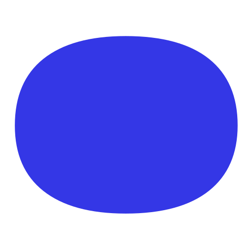

Every figure is kept as printed and names the page of the filing it was read from.

Keeps dated copies of the federal registry and reports what changed between two of them.
A free site of state 340B filings. No cookies, no trackers, no sign-in.